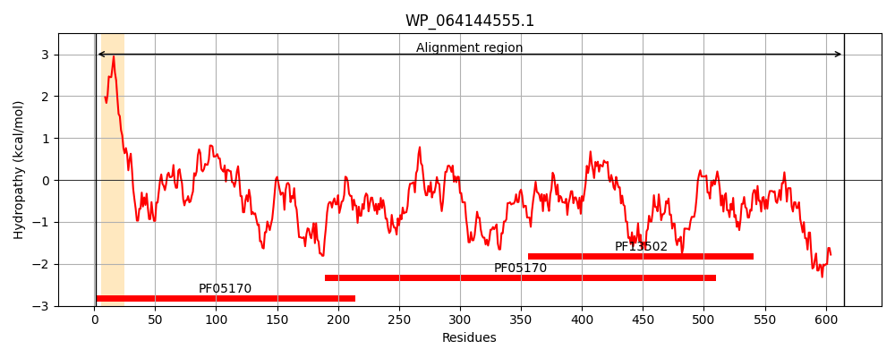
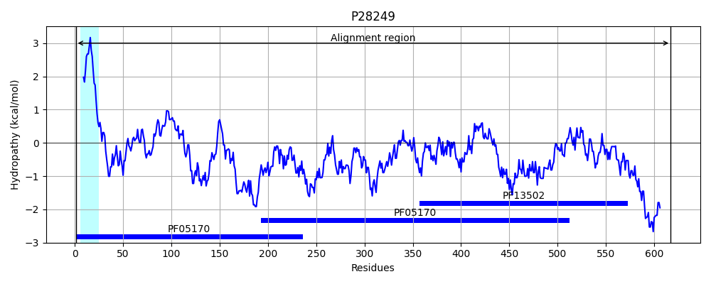
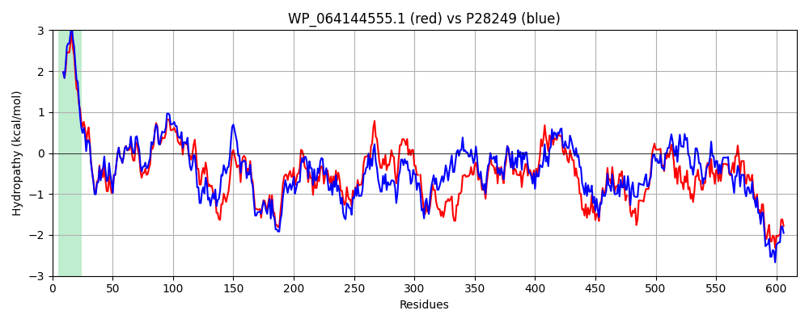

Hit Accession: P28249
Hit TCID: 9.B.22.2.1
Hit Description: gnl|BL_ORD_ID|9636 gnl|TC-DB|P28249|9.B.22.2.1 Protein AsmA OS=Escherichia coli (strain K12) GN=asmA PE=3 SV=2
Mach Len: 617
e:0.000000
Query TMS Count : 1
Hit TMS Count: 1
TMS-Overlap Score: 1.000000
Predicted Substrates:None
BLAST Alignment:
Score: 2067 , Bit scores: 800 bits, E-value: 0.0e+00, Alignment length: 617, Percentage identity: 63
Query: 1 MRRILTTLMILLAVIVAGLTSLVLLVNPNDFRAYMVHEVAERSGYQLELDGPLRWHVWPQLSILSGRMTLTARGAEEPVIRADNMRLDVALLPLLSHQLQVKQVMLKGAVIQLTPKTEAVRDSAAPVVPHDNTLPQAPEDRGWSYDVRQLQVADSVLFFQHENGEQITVRDIRLQMEQDENHRATVDFSGRINRDQRDLALSFSATVQGGDYPHSLKADFSQLSWQLRGAELPPDGINGQGSLQASWQEDGKTLRFDNLNLMASGSTLTGNGSVVLGDRPDWSLDLHATTLNLDSLLAPSSPAT-DSSASQQGQSQTRPLRPVIADSDEREDYQSLRGFNGRMALSADQLQWRGLNFTQVQSEISNQQGLLTVSKMQGNLDGGQLSLPGTLDARGDTPQAAFQPALQNVEIGSLIKAFNYSLNLTGKLSLTGEFSGTRIDADDFRRHWQGQAQLQMADTRTEGLNFQQLVQQAVERS-TNVRAQENYDNATRLDSVSSQLTLDNGVVTLNRLQGQSDVMAMTGEGQLDLQKENCDMRFNVRVLGGWKGEGKLIDRLKQTAIPLRIYGDWQSLSYSLQVDQILRKQLQDEAKQRLNDWVERNKGSKESKDAKKLLDKL 615
MRR LTTLMILL V+VAGL++LVLLVNPNDFR YMV +VA RSGYQL+LDGPLRWHVWPQLSILSGRM+LTA+GA +P++RADNMRLDVALLPLLSHQL VKQVMLKGAVIQLTP+TEAVR APV P DNTLP +DRGWS+D+ L+VADSVL FQHE+ EQ+T+R+IRLQMEQD HR + +FSGR+NRDQRDL +S + TV DYPH L A Q++WQL+GA+LP GI GQGS QA WQE K L F+ ++L A+ STL+G V L ++P+W L L LNLD+L+ + A ++ A+QQGQSQ+ RPVI+ + YQ L+GF + L A ++WRG+NFT V ++++N+ GLL ++++QG L+GGQ+SLPGTLDA P+ FQP L+NVEIG+++KAFNY ++LTGK+SL G+FSG IDAD FR +WQGQA ++M DTR EG+NFQQ++QQAVER+ +V+A EN+DN TRLD ++ LTL +GVVTLN +QGQS V+A+TGEG L+L + CD +F++RV+GGW GE KLID LK+T +PLR+YG+WQ L+YSLQVDQ+LRK LQDEAK+RLNDW ERNK S+ KD KKLL+K+
Sbjct: 1 MRRFLTTLMILLVVLVAGLSALVLLVNPNDFRDYMVKQVAARSGYQLQLDGPLRWHVWPQLSILSGRMSLTAQGASQPLVRADNMRLDVALLPLLSHQLSVKQVMLKGAVIQLTPQTEAVRSEDAPVAPRDNTLPDLSDDRGWSFDISSLKVADSVLVFQHEDDEQVTIRNIRLQMEQDPQHRGSFEFSGRVNRDQRDLTISLNGTVDASDYPHDLTAAIEQINWQLQGADLPKQGIQGQGSFQAQWQESHKRLSFNQISLTANDSTLSGQAQVTLTEKPEWQLRLQFPQLNLDNLIPLNETANGENGAAQQGQSQSTLPRPVISSRIDEPAYQGLQGFTADILLQASNVRWRGMNFTDVATQMTNKSGLLEITQLQGKLNGGQVSLPGTLDATSINPRINFQPRLENVEIGTILKAFNYPISLTGKMSLAGDFSGADIDADAFRHNWQGQAHVEMTDTRMEGMNFQQMIQQAVERNGGDVKAAENFDNVTRLDRFTTDLTLKDGVVTLNDMQGQSPVLALTGEGMLNLADQTCDTQFDIRVVGGWNGESKLIDFLKETPVPLRVYGNWQQLNYSLQVDQLLRKHLQDEAKRRLNDWAERNKDSRNGKDVKKLLEKM 617 | Protein Hydropathy Plots: |
|---|
|  |  |
Pairwise Alignment-Hydropathy Plot:
|
|---|
|  |